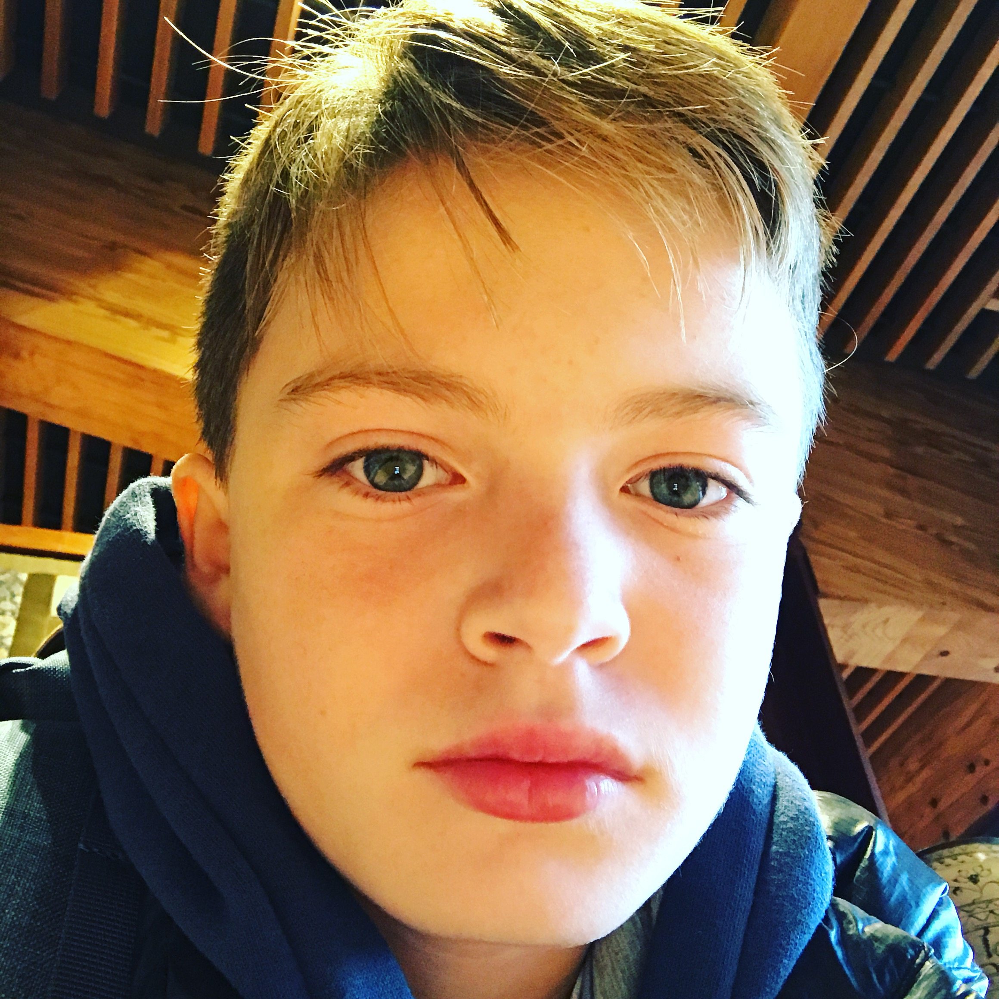

Myles Zappola is a young filmer and a student at Ross School. He has made many films. Two of his movies are included in this site for you to watch. To the left is Kid Police and to the right is Minecraft Real Life 4. He was Born In Southampton NY and moved to Sag Harbor when I was one year old. He also works out at the Sag Harbor Gym. He has been making short films with his cousin since he was about ten years old when he lived in Amagansett for a summer. That movie that he made has been lost but was called "Minecraft Real life." It was about a boy who wished that he lived in a minecraft world and his dream came true when he went to sleep. When he entered the world, he met many new friends, defeated enemies, and had fun. When he woke up, his cousins were trying to wake him up at his bedside. He was surprised because the characters in the minecraft world looked like his reallife cousins. "